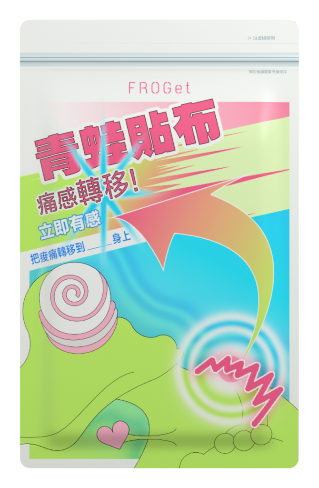

0.3
秒
不用一眨眼，立即見效
撕開、貼上，F 粒子 0.3 秒內開始搜集疼痛訊號。比你按下 ⌘Z 還快，痛感立刻有地方去。

痛感轉移！立即有感
全新 F-TRANSFER 痛覺轉移貼，五層 F 粒子系統從吸收到發射，一貼完成痛覺轉移。
疼痛不必再忍，它是可以回收、轉換、輸出的資源。
撕開、貼上，F 粒子 0.3 秒內開始搜集疼痛訊號。比你按下 ⌘Z 還快，痛感立刻有地方去。
一片撐滿 30 小時，把整天的痠痛慢慢存起來。存到極限就集中爆破，熬夜改稿也撐得住。
轉移出去的痛感，會在 3 公尺內找到新主人。開會前記得確認一下，坐你旁邊的是誰。
肩頸的痠、手腕的疼，還有聽到「再改一版」時的爆炸痛，三種一起收，一片搞定。
透過定向能量發射技術，精準鎖定目標對象，將累積的疼痛訊號全面釋放，實現痛覺轉移，讓酸痛不再由你承擔。
配置多重能量匯流結構，有效集中並壓縮F射線，將分散的疼痛能量凝聚成高密度能量核心，蓄勢待發。
透過專利F粒子轉換技術，將搜集而來的疼痛能量進行分子重組，轉換為肉眼不可見的高頻F射線。
搭載高活性F粒子，能精準感應肌肉不適，迅速舒緩緊繃感，同時全面搜集疼痛訊號，轉化為可利用能量。
採用高密度親膚滲透材質，迅速深入肌膚表層，將有效成分層層導入，直達疼痛核心，開啟能量吸收程序。
NT$ 999
這是一段假文，示意這裡會放的說明內容與大概長度，正式文案之後再替換。這是一段假文，示意這裡會放的說明內容與大概長度，正式文案之後再替換。
數量